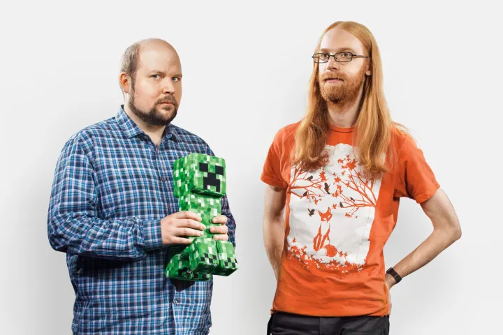

Jens Bergensten, plus connu sous le pseudonyme de Jeb, a rejoint Mojang en
novembre 2010 en
tant que développeur back-end pour le jeu Scrolls, Jeb a rapidement été de plus en plus
impliqué dans le développement de Minecraft. Sous sa direction, plusieurs fonctionnalités
majeures ont été introduites dans Minecraft notamment la mise en œuvre des éléments tels que
les loups, les pistons et diverses structures, dont des villages, des forts et des
forteresses du Nether. Ces ajouts ont considérablement enrichi le gameplay, offrant aux
joueurs de nouvelles opportunités créatives et stratégiques.
Daniel Rosenfeld, connu sous le nom d'artiste C418, est un compositeur et musicien allemand
dont la contribution à Minecraft en tant que créateur de la musique emblématique du jeu est
inestimable. Recruté pour composer la bande sonore, C418 a enrichi l'atmosphère immersive et
captivante de Minecraft, offrant une expérience sonore unique qui harmonise parfaitement
avec le gameplay créatif et réfléchi du jeu.
En décembre 2011, Jeb a pris la place principale dans le développement de
Minecraft, succédant à Notch qui avait démissionné.

Sous sa direction, Minecraft a continué à évoluer avec des mises à jour
régulières,
introduisant de nouvelles fonctionnalités, des biomes, des créatures, et des mécaniques de
jeu innovantes. C’est suite à un ras-le-bol et à de nombreux commentaires négatifs de la
part
de la communauté que Notch vend Mojang et tous ses actifs à Microsoft le 15 septembre
2014. Il fini par quitter Mojang le 5 novembre 2014 avec d’autres fondateurs.